在 DOM 中添加元素
动态的在网页中添加元素
在前面的教程你中学到了 DOM 通过简单的树形结构 来代表网页文档结构。 树中的每个节点都代表页面的一个元素。 每个节点都知道它的父节点和 所有子节点。 在 Dart 中， Node 类包含了实现节点树功能的 函数和属性。
HTML 页面元素是 DOM 树中的一种节点。 他们在页面上占据一个矩形框，并且可以接收事件。 标题、段落、表格、 按钮 等都是 页面元素的示例。
在 Dart 中，元素 由 Element 类实现，该类是 Node 的子类。 由于你通常只关心元素节点，所以 该教程主要介绍 Element 类，而 不是 Node 类。
- 复制并运行 todo 应用
- 关于 Dart 中的父和子元素
- 设置 HTML 页面
- 从 DOM 中获取一个元素
- 注册一个事件监听器
- 关于 EventListener 函数
- 在 DOM 树中添加一个元素
- 给页面元素应用样式
- 在 DOM 树中移动元素
- 其他资源
- 接下来干啥？
复制并运行 todo 应用
在该教程中，将使用一个简单的 待办事项 web 应用来演示。 该应用动态的修改 DOM， 通过在 DOM 中添加元素来 修改网页界面。
动手试试！ 在下面的输入框输入文字然后按回车键。 该应用会在列表中添加一个条目。 你可以通过输入框添加多个条目：
这是一个待办事项应用的起始功能。 目前该应用只实现了添加条目的功能， 还无法删除条目。
关于 Dart 中的父和子元素
Node 类实现了 DOM 节点的 基本行为。 Element 类是 Node 的子类， 该类实现了页面元素节点相关的行为。 例如， 一个元素知道它在网页中 的宽度和高度，并且可以 接收事件。
你可以通过添加和删除节点来操控 DOM 树。 但是，大多数的 Dart 应用只关心页面元素。 所以，为了方便和让代码看起来更简单， Element 类实现了和 DOM 一些节点交互 的一些 API。 你可以操作一个虚拟的 Element 树来简化代码 编写，而不是用一个复杂的 Node 树。 该教程通过 Element 来演示 如何操控 DOM。
一个 Element 有一个父 Element 和一些 子 Element，这些子 Element 通过一个 list 保存。
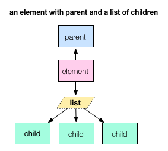
每个 Element 最多只有一个父 Element 。
Element 的父节点是不可修改的(带有 final 修饰符)。
所以你无法通过改变 Element 的父节点来移动它。
通过 getter parent 函数来获取 Element 的父节点。
例如，如果你有一个名字为 anElement的 Element ，
你可以通过 anElement.parent 来查找该元素
的父 Element 对象。
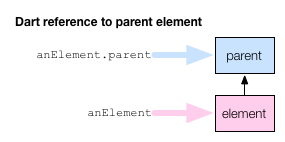
一个 Element 用一个 list 来保存所有子 Element 。 List 是 dart:core 库中的一个类， 该类实现了一个可索引的集合。 list 可以是固定大小的也可以是可动态扩展的。
List 是 generic(泛型) (或者 parameterized 可参数化)类型 — 可以定义参数的统一类型。 这意味着一个 list 可以定义为只能 存放特定类型的对象。 例如：
| List 声明 | List 描述 |
|---|---|
| List<String> | 只能存放 string 的 list |
| List<int> | 只能存放整数的 list |
| List<Element> | 只能存放 Element 的 list |
一个 Element 通过 List<Element> 来维护它所有的子节点，
在 Dart 代码中是通过 Element 的 getter children 函数来获取的。
List 类有各种函数和操作符可以让你
索引每个 Element 、遍历 list或者
添加和删除 Element 。
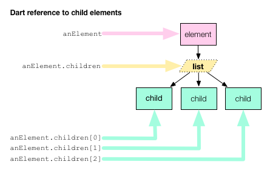
你可以通过添加或者删除子节点 list 中的 Element 来修改树结构。
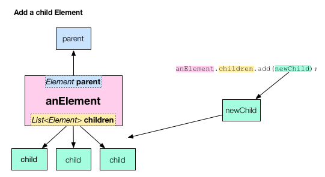
当你在 Dart 代码中改变一个 Element 或者 Element 的子节点时候， 你同时也改变了 DOM 树，然后 web 页面也跟着修改了。 浏览器会自动重新渲染改变过的页面。
设置 HTML 页面
下面来看看这个 待办事项应用是如何 动态的添加元素 到 DOM 树中的。
待办事项应用的 HTML 代码设置了初始的界面和 DOM 树。 你可以通过使用 Dart 代码来实现相同的结果， 但是在 HTML 中定义界面的初始代码是更好的选择 （更加易懂，加载更快）。
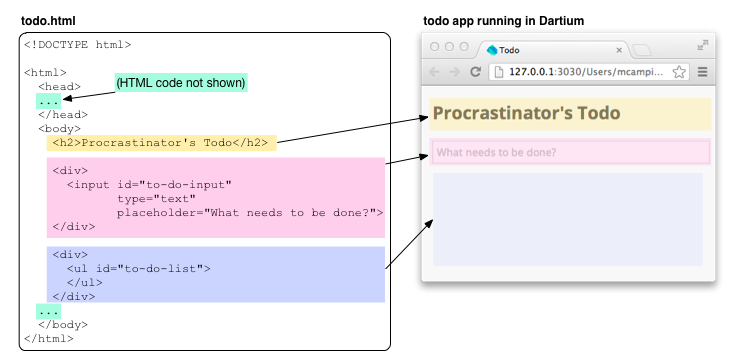
下图显示了待办事项应用部分 DOM 树。
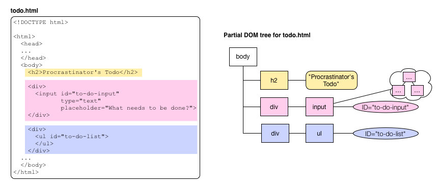
重点关注 ID 为
to-do-input 和 to-do-list 这两个页面元素。
第一个定义了用户输入的 <input> 元素。
第二个定义了包含待办事项条目
的 <ul> (无序列表)元素。
当用户在输入框中输入文字并按回车键后，
Dart 代码在 list 中添加一个元素。
从 DOM 中获取一个元素
下图显示了待办事项应用的 Dart 代码。
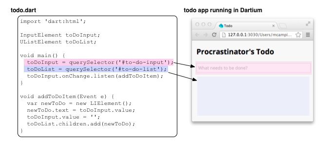
在 main() 函数中用 dart:html 库中的 query() 函数 来从 DOM 中查询感兴趣的元素。 由于调用 query() 函数是需要代价的， 如果代码中不只一次使用同一个元素， 则应该用一个变量来保存该元素的应用， 避免每次调用 query() 函数来查找。
上面的代码用一个顶级变量 toDoInput
来保存输入框元素
对象。
用一个顶级变量 toDoList 来
保存一个无序列表元素对象。
注意这两个变量的类型：InputElement 和 UListElement。 他们两个都是 Element 的子类。 dart:html 中有几十个 Element 的子类， 大部分的类都代表对应的 HTML 标签。 上面的代码用到三个标签：
| HTML 标签 | Dart 类 |
|---|---|
| <input> | InputElement |
| <ul> | UListElement |
| <li> | LIElement |
注册一个事件监听器
当用户在输入框输入文本后， 触发一个 change 改变 事件， 该事件表明输入框中的值改变了。 待办事项应用定义了一个函数 addToDoItem() 来 处理该改变事件。 下图说明了 addToDoItem() 函数和输入框改变事件的关系：

也可以把上面的代码 想象成 Dart 中在 Element 上注册 事件处理函数的习惯用法。

改变事件只是输入框能触发的
众多事件中的一种。
例如，你可以用 click 来处理鼠标点击事件，
也可以用 keyDown 来处理键盘按下某个键的事件。
关于 EventListener 函数
listen() 函数的参数是类型为 EventListener 的_回调函数_。 EventListener 在 dart:html 库中用 typedef 定义的：
typedef void EventListener(Event event)
如上所见，一个 EventListener 没有返回值并且接收一个 Event 对象作为参数。 任何具有该签名的函数都是一个 EventListener。 根据该签名信息，addToDoItem() 函数就是一个 EventListener。
void addToDoItem(Event e) { ... }
EventListener 函数的 Event 参数对象包含了 发送该事件的 Event 对象。 例如， Event 对象知道那个元素何时触发了该 事件。 对于位置相关的事件，例如 鼠标点击， Event 对象还知道事件发生在哪里。
addToDoItem() 函数忽略了 Event 参数对象。
在 DOM 树中添加一个元素
该事件处理函数的代码如下：
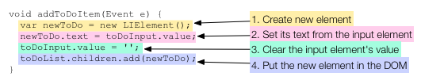
最后一行代码是修改 DOM 树的代码。
Element 用一个名字为 children 的 list 来保存所有的子节点。
从该 list 中添加或者删除元素就可以
修改 DOM。
当 DOM 改变后， 浏览器就会重新渲染页面。
在待办事项应用中的效果就是一个新的列表
条目出现了。
给页面元素应用样式
再来看看该应用的 CSS 文件。
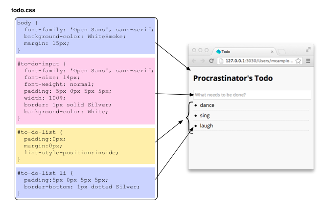
上面的代码用了三种不同的选择器。 第一个是匹配 <body> 元素的 HTML 元素选择器， 设置了一些基础的样式属性，例如 整个网页的背景颜色。 后面是两个 ID 选择器： #to-do-input 控制输入框的样式， #to-do-list 控制无序列表 的样式。 最后一个 CSS 规则控制 无序列表中每个 条目的样式，该 CSS 规则用了 ID 选择器和 HTML 选择器。 该规则匹配所有位于 ID 为 to-do-list 元素中的 <li> 元素。
在 DOM 树中移动元素
下面是一个如何在 DOM 中移动元素的示例。 动手试试！ 点击一个单词中的字母。
当该程序启动的时候，
为七个随机生成的字母创建七个 button 元素。
Dart 代码 letterpile.children.add()
把这七个元素添加到一个
ID 为 letterpile 的 <div> 元素中。
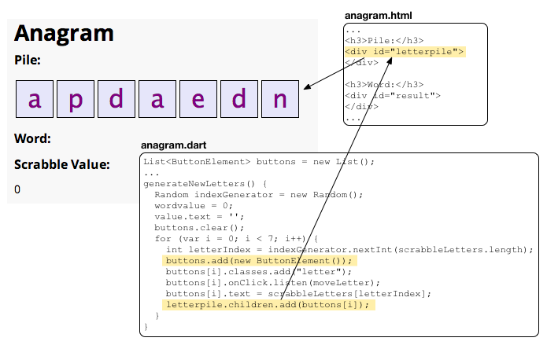
每个 button 元素都添加了一个 moveLetter() 函数用来处理鼠标点击事件。 如果 button 在 letterpile 中， 鼠标点击事件就把该 button 放到 word 的最后， 如果 button 在 word 中， 则鼠标点击事件就把该 button 重新放到 letterpile 中。
要实现把 button 移来移去， 代码只需要把 button 添加到不同的 DOM 元素中即可。 由于每个元素只有一个父节点， 当添加一个元素到其他元素中时，会 自动删除该元素的当前父节点。
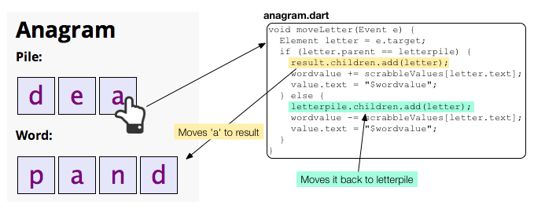
其他资源
- 不要忘了看看 Dart Cookbook， 这里具有很多操作 DOM 和使用 CSS 的技巧。 该书还介绍了 Dart 基本数据类型，例如 strings、 lists、 maps、 和 numbers。
- Dart: Up and Running 是覆盖了 Dart 语言、库和工具的一本书。
接下来干啥？
在下一个教程中，删除 DOM 元素 将 描述如何从 DOM 中删除元素（从待办事项列表中删除一条）。